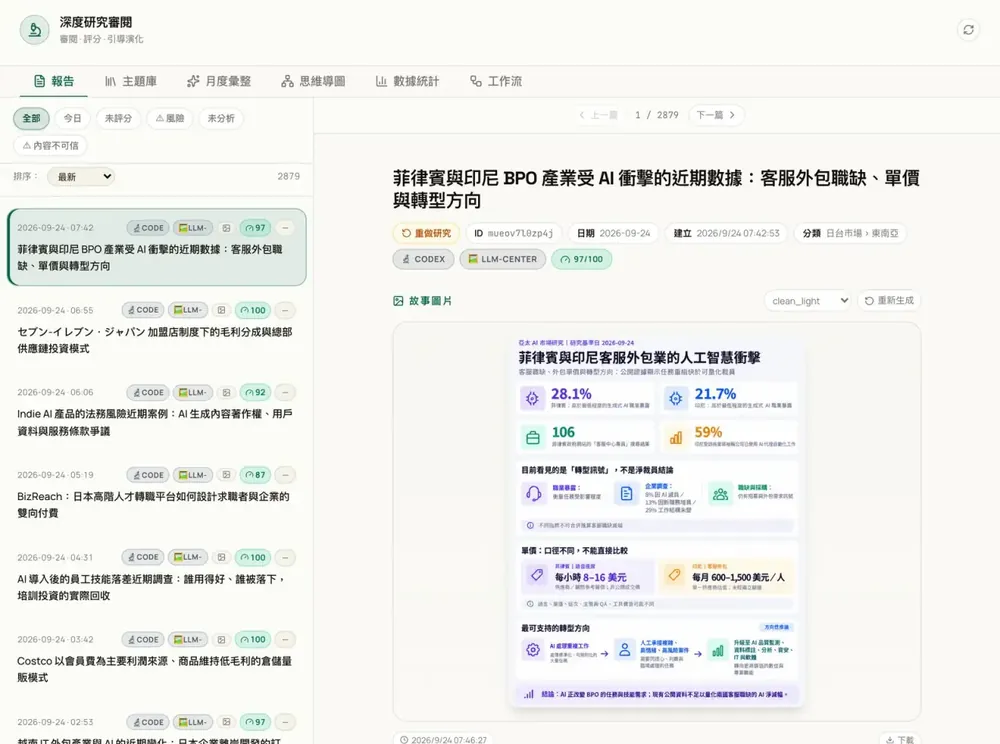
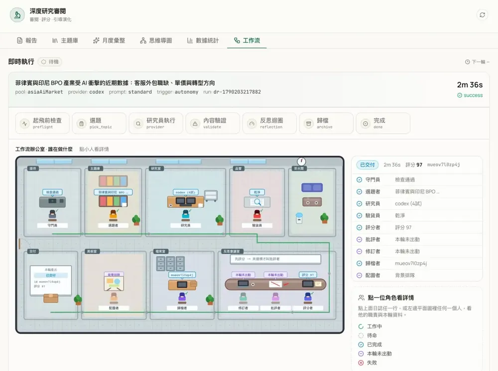
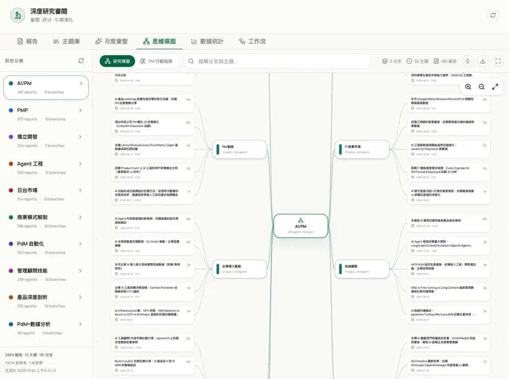
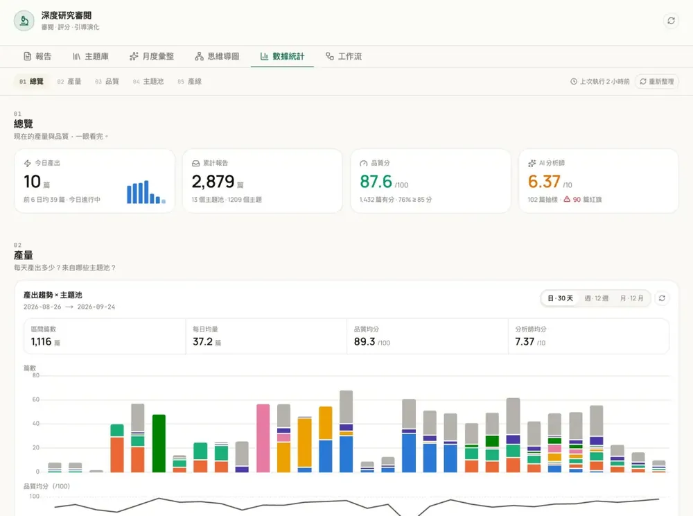

調査レポートを、
毎日自動で納品する。
ディープリサーチ基盤「深研」。テーマ選定から調査、出典付きレポート、品質チェック、Telegram 配信までを機械が回します。人が決めるのは「どれを読むか」だけ。直近 2 週間は、毎日 27〜65 本を納品しています。
作業日報
リサーチデスク2026-09-20（日）
| 分野 | 本数 | |
|---|---|---|
| PM スキル | 17 | |
| 個人の成長 | 11 | |
| 市場インテリジェンス | 10 | |
| 事例アーカイブ | 2 | |
| 合計 | 40 |
- 累計レポート2,803本2026-04-17 の初回から
- 1 本あたり（中央値）3.9分9 割が 11 分以内
- 試行成功率95.8%1,358 ／ 1,418 回（08-15 以降）
- 手動操作0回テーマ選定から配信まで
AI がどこまで仕事を代われるかを、自分の毎日で確かめる。
きれいなデモではなく、自分の業務に組み込んで確かめる。深研はそのための実験です。
- Q1
自動化はどこまで進み、どこで失敗するか。
そして人は、最後にどの工程に残るべきか。失敗しやすいのは、空の応答と開けないリンクでした。
- Q2
学ぶ・調べるは、一度では終わらない。
重いのは「1 本探す」ことより、選定から判断までを毎日くり返すこと。
選定
担当
調べるのは機械、
決めるのは人。
9 工程の担当を固定し、機械で判定できることは AI に頼みません。AI の出力は、必ずシステムの関門を通ってから次へ進みます。
- 3 時間ごとに 1 本
- 1 · 4 · 4人 · AI · システムの工程数
作業指示書
調査レポート 1 本工程 9 · 担当固定
| No | 工程 | 担当 | 内容 |
|---|---|---|---|
| A 題を決めるその日の気分で決めない | |||
| 01 | 出題 | 人＋AI | 13 分野にテーマを貯める。出題と審査は別の AI。 |
| 02 | テーマ選定 | SYS | 未着手のテーマを優先。完了したテーマは 48 時間空ける。 |
| B 調べる条件は指示文に固定する | |||
| 03 | 問いの分解 | AI | 問いを 3〜5 個に分解し、日英で検索する。 |
| 04 | 出典のルール | SYS | 出典 8 件以上。事実と推論を分け、足りなければ「資料不足」と書く。 |
| 05 | AI リレー | AI | 4 社のモデルを分野ごとの優先順で使い、失敗なら自動で次へ。 PerplexityGeminiChatGPTGrok |
| C 通すか、止めるか出力がある ≠ 使える内容 | |||
| 06 | 受入ゲート | SYS | 空・HTML 混入・丸写し・古い回答を弾く。 ✕ NG → 次の AI で作り直す |
| 07 | 採点・書き直し | AI＋SYS | ルールで採点。不合格のときだけ別の AI が書き直す。 ↻ 不合格 → 書き直し |
| 08 | リンク実検証 | SYS | 事例の URL を実際に開いて撮影。開けないものは赤で表示。 |
| D 決める準備は機械、判断は人 | |||
| 09 | 人が決める | 人 | 読むか使うかは人が決める。全試行は台帳に残る。 |
AI は失敗する。
だから、機械のチェックで止める。
AI の失敗の型ごとに、機械のチェックを置きました。右の数字は、実際に止めた分です。
検査記録
運用ログ · 台帳より試行 1,418 回（08-15 以降）
1 社の AI に賭けない 完成 1,358 本の内訳
AI 1 社だけに頼っていたら、3 本のうち 2 本は完成していません。
事例のリンクは、実際に開く 1 マス＝1% · 1,196 本
完成の 30 秒後に全リンクを開いて撮影します。
そのほかの関門
- 先に採点するルール採点は AI の利用枠を使わない（トークン 0）。不合格のときだけ書き直す。
- 失敗も残す全試行を台帳に記録。推測せずに原因を追える。
- 禁止領域扱わないテーマは、ハードルールで最初に弾く。
人は資料を探さず、
選ぶだけになった。
利用者と事業、それぞれ 3 項目ずつ。6 つとも、運用ログと台帳の数字で確認できます。
検収チェック表
深研 · 2026-09-21 時点利用者何ができるようになったか
- ✓課題の解決自分で巡回して資料を探す必要がなくなった
- ✓効率と能力1 人で 13 の知識ラインを同時に進められる
- ✓安全とコントロール開けないリンク 264 本を、引用する前に赤で表示
事業収益・コスト・選択肢
- ✓コストと効率手動操作 0 回、ルール採点のトークン 0
- ✓リスクとコントロール1 社が止まってもラインは止まらない
- ✓組織と能力2,803 本のレポートと仕組み一式
確認元：運用ログ・試行台帳・管理画面
品質と生産量は、
管理画面でいつでも確かめられる。




ワークフローの 1 回分（2 分 36 秒・97 点）は 02 の 9 工程に、テーマの貯蔵庫は 01 の課題に対応します。miko-ws 管理画面 · 2026-09-24 撮影。画面のタイトルはレポート原文（中国語）のままです。
PM 1 人でも、
毎日の納品は止まらない。
- 2,803累計レポート
- 95.8%試行成功率
- 0手動操作
- 5 か月稼働期間
自動化の線引きについて、お話しできます。
データは 2026-09-21 時点 · 初回レポート 2026-04-17 · miko-ws ディープリサーチ基盤